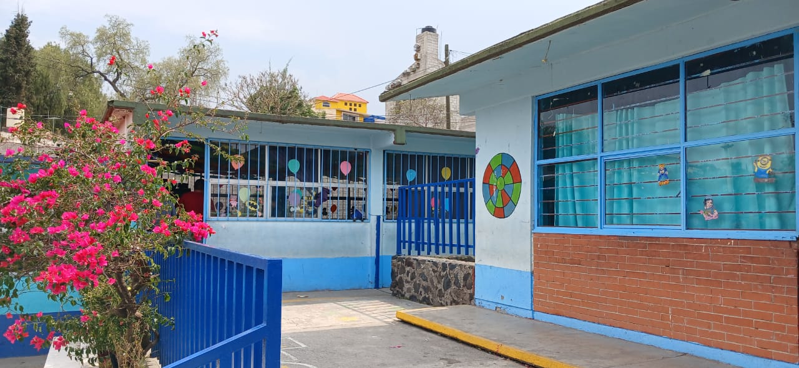
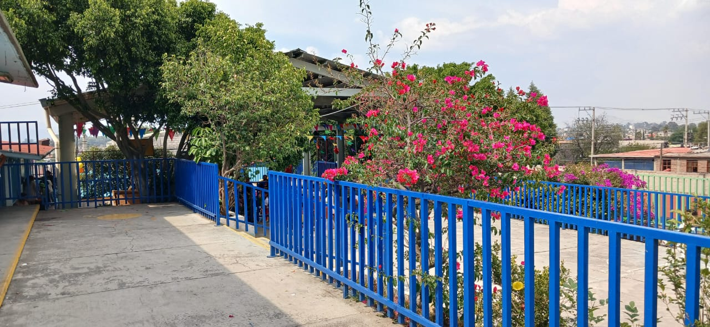
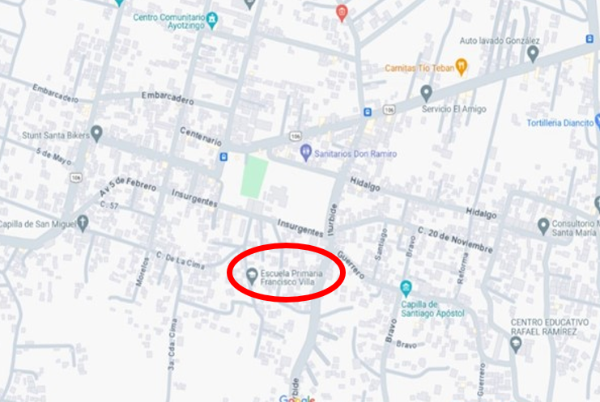

ESCUELA PRIMARIA “FRANCISCO VILLA”
INSTALACIONES
La Escuela Primaria Francisco Villa Turno Vespertino cuenta con instalaciones diseñadas para brindar un ambiente seguro y adecuado para el aprendizaje de sus estudiantes.
Aquí tienes una descripción de sus espacios:

Infraestructura General
• Aulas:
12 salones equipados para la enseñanza.
• Áreas comunes:
Espacios de recreación y convivencia para los alumnos.
• Baños:
Instalaciones sanitarias adecuadas para los estudiantes y personal docente.
• Biblioteca:
Espacio equipado con libros para todas las edades de los alumnos
Áreas Deportivas
• Cancha deportiva:
Espacio para la práctica de fútbol, básquetbol y otras actividades físicas.
• Material didáctico para juegos:
Contamos con una variedad de material perfecto para actividades deportivas
Mantenimiento y Seguridad
• Limpieza:
Se mantiene un programa de higiene y mantenimiento constante.
• Seguridad:
La escuela cuenta con medidas de seguridad para garantizar el bienestar de los estudiantes.

DIRECCIÓN
DIRECCIÓN INSURGENTES NO. 13 SANTA CATARINA AYOTZINGO CHALCO, ESTADO DE MÉXICO C.P 56623

ACCEDE A ESTE ENLACE PARA VER LA UBICACIÓN
DIRECCIÓN INSURGENTES NO. 13 SANTA CATARINA AYOTZINGO CHALCO, ESTADO DE MÉXICO C.P 56623
NUMERO DE TELEFONO 5516436297
CORREO 15epr4419t@dgeb.gob.mx